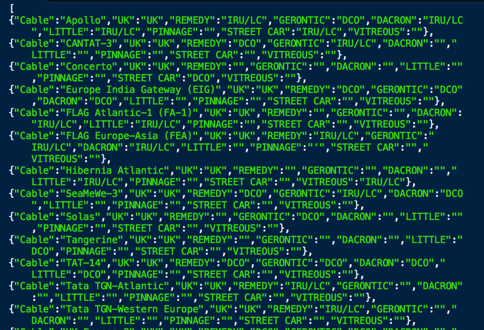
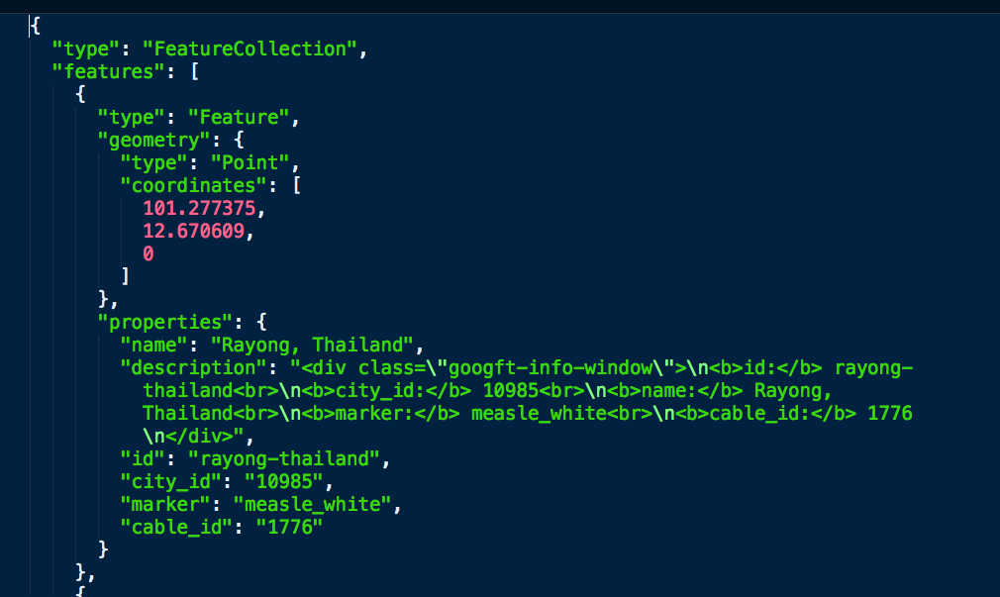
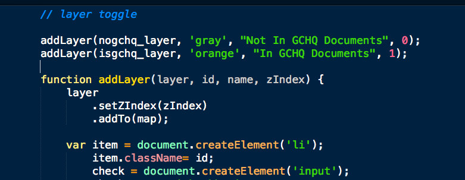

hi!
joining json data to a geojson file with node
adding a geojson file to a map in leaflet
spoiler: there are lots of ways to do this
i was sloppy
i just used jquery
no shame
assumptions
the command line is your friend
this is mostly javascript
onward
many steps
1. an image file PDF → json
2. a KML file → geojson
but right now let's focus on:
3. smashy smash magick
basically
a table join
but in json
because we can
json and the argonauts
java
script
object
notation

omg geojson

90% of the time
when you have a code problem
someone made a tool for it
75% of the time
someone you know made that tool
thanks, keller
or
npm install -g joiner
command line
joiner
-a FILE_PATH
-k DATASET_A_KEY
-b FILE_PATH
-l DATASET_B_KEY
-m (json|geojson)
-n NEST_ID
-o OUT_FILE_PATH
-d (summary|full)
actual script
output json → geojson
3.5 separate non-GCHQ cables from GCHQ cables
4. put it on a map

list of things used:
THANKS AWESOME